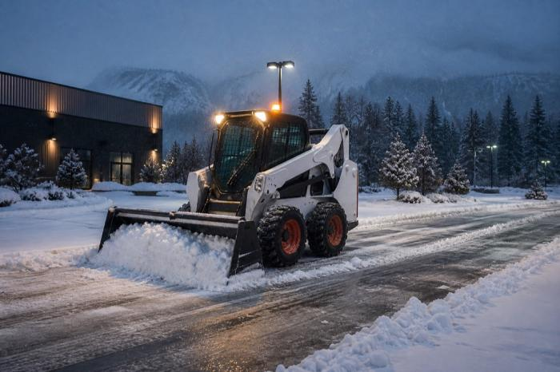

Skid steer snow blowers, plow blades, and salt/sand spreaders — outfitted, sold, and serviced by Kong Tractors for North Vancouver and the North Shore ahead of winter.

Service illustration — equipment and attachment availability are confirmed for each project.
Every attachment Kong Tractors fits for the North Shore is built to pair with our skid steers, backhoes, and front loaders for fast, reliable clearing.
High-throughput snow blower attachments for driveways, lots, and municipal contracts around North Vancouver.
Front-mounted pushers and plow blades for quick clearing of commercial lots and strata properties in North Vancouver.
Tow-behind and mounted spreaders to keep North Vancouver driveways, lots, and walkways safe after the plow passes.
From single properties to standing winter contracts, Kong Tractors outfits and services the equipment behind North Vancouver's snow response.
Reliable clearing equipment for shared driveways, parking areas, and walkways.
Snow pushers and spreaders sized for retail, office, and industrial lots around North Vancouver.
Keep long driveways and yard access clear through the the North Shore winter.
Fast attachment repair and compatible parts when equipment needs to be back out clearing snow.
Yes — Kong Tractors sells and fits skid steer snow blowers, plow blades, and salt/sand spreaders for customers throughout North Vancouver and the North Shore, from our Abbotsford, BC headquarters.
Kong Tractors' service team prioritizes storm-season repairs and keeps parts availability confirmed per enquiry so snow equipment near North Vancouver can get back to work quickly.
Strata and commercial lots in North Vancouver typically use plow blades and spreaders for fast clearing and ice control, while larger properties and acreages often add a skid steer snow blower for high-volume snowfall.
Kong Tractors outfits the equipment behind North Vancouver's winter response — PlowWow runs the actual snow removal service, with 24/7 dispatch and seasonal contracts across the Lower Mainland.